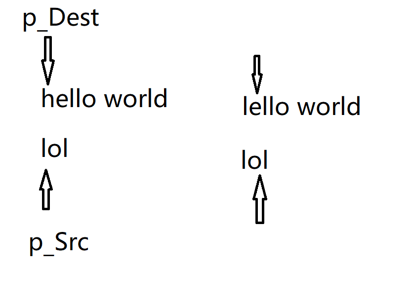
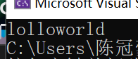
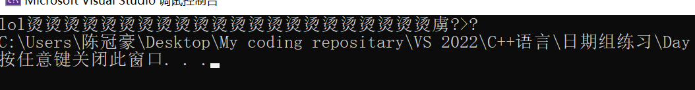
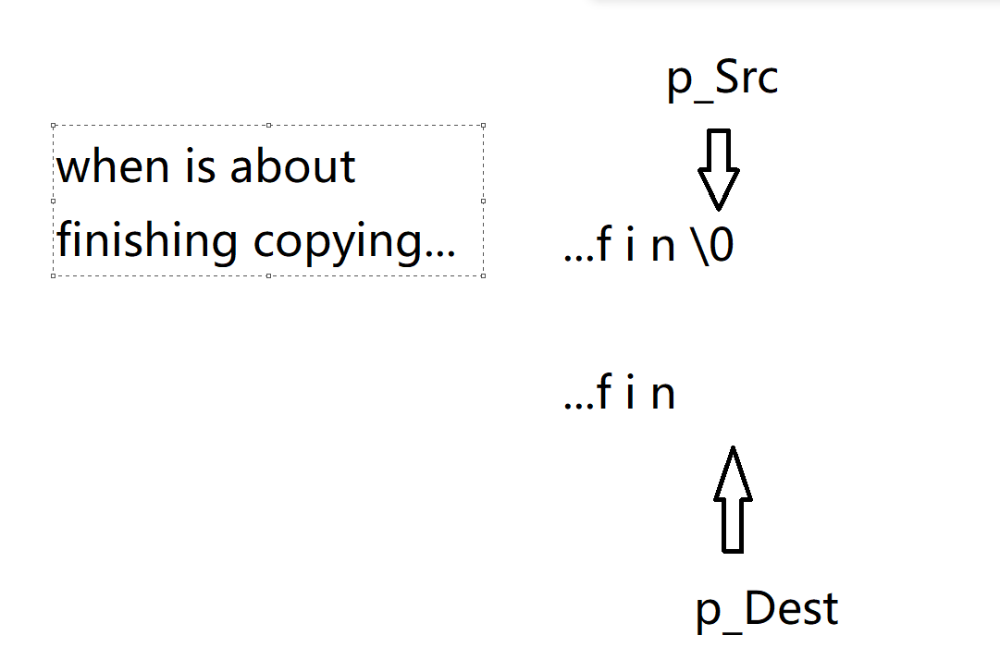
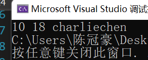
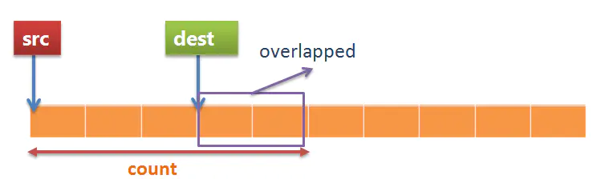

C语言常用函数（1）string.h系列
string.h常用API 一览
string.h
#include<string.h> 这个东西，我想学习过C语言的都不陌生。这里我们拿出来一些常见的，有用的函数来仔细讲讲，仔细学学！
strcpy&&strcat
我们首先来看看strcpy: 他就是 string copy的简写 而strcat可以看作string concatenates的缩写：这里先放一下官方对这两个函数的解释（水字数（划））
/***
*strcat.c - contains strcat() and strcpy()
*
* Copyright (c) Microsoft Corporation. All rights reserved.
*
*Purpose:
* Strcpy() copies one string onto another.//拷贝字符串
*
* Strcat() concatenates (appends) a copy of the source string to the
* end of the destination string, returning the destination string.//追加字符串
*
*******************************************************************************/
#include <string.h>// 引入定义的头文件
//无需理睬这里
#ifndef _MBSCAT
#pragma function(strcat, strcpy)
#endif
//
/***
*char *strcat(dst, src) - concatenate (append) one string to another
*
*Purpose:
* Concatenates src onto the end of dest. Assumes enough
* space in dest.//这个 Assumptions相当有趣，它忽视了字符串可能发生上溢的风险
* //转而交给专门检查这个并抛出相关错误的函数来干
*Entry:
* char *dst - string to which "src" is to be appended
* const char *src - string to be appended to the end of "dst"
*
*Exit:
* The address of "dst" //返回被追加字符串的首地址，便于我们访问
*
*Exceptions:
*
*******************************************************************************/
char * __cdecl strcat (
char * dst, // 目标要被写入，就必须不加 const，否则会报错
const char * src // 源头不能改，加 const
)
{
// 先取到首地址，防止改动 dst 导致被追加字符串无法访问
char * cp = dst;
while( *cp )
cp++; /* find end of dst */
while((*cp++ = *src++) != '\0') ; /* Copy src to end of dst */
return( dst ); /* return dst */
}
/***
*char *strcpy(dst, src) - copy one string over another
*
*Purpose:
* Copies the string src into the spot specified by
* dest; assumes enough room.
*
*Entry:
* char * dst - string over which "src" is to be copied
* const char * src - string to be copied over "dst"
*
*Exit:
* The address of "dst"
*
*Exceptions:
*******************************************************************************/
char * __cdecl strcpy(char * dst, const char * src)
{
char * cp = dst;
while((*cp++ = *src++) != '\0')
; /* Copy src over dst */
return( dst );
}
水完了，但是仔细看看，却发现信息量很大！我们首先从 直接拷贝 说起：
strcpy 直接拷贝
strcpy函数是一个直接从资源（拷贝）字符串中拿取信息扔到另一个字符串里，从实现上我们一眼看出了这个函数会覆盖目的地字符串的信息!
问题来了，我们怎样理解这段代码？或者说：当我们也要自己实现一个搬运信息的函数的时候，怎样实现一个跟库里一样简洁的函数呢？
首先，我们的思路就是：
1）确定函数的参数列表，返回类型！ 参数根据问题来看：从哪里拷贝？拷贝到哪里？ 返回类型？好像一眨眼看，不需要返回什么（因为我们可以拿起目的地字符串指针），于是：
void myStrCpy(char* dest , char* src) 接下来，就是拷贝工作了！为了访问数据， 在C语言中 ，除了使用下标访问，我们还可以使用指针 ：定义两个指针出来，开始拷贝！
char* p_Dest = dest ; //我们当然可以这么做！数组名表示首元素地址！
char* p_Src = src ; 然后呢？我们开始拷贝：
*p_Dest = *p_Src ; 不对啊！拷贝完第一个，咱们还要拷贝下一个啊！
p_Dest++;
p_Src++ ; 然后重复工作！很明了了，我们使用while循环
while( /* Still Unknown */)
{
*p_Dest = *p_Src ; //拷贝
p_Dest++; //移动指针
p_Src++ ; //移动指针
} 怎么停下来？好说！ source拷完了停下来嘛！怎么看 source 拷没拷完？字符串终结的标志，是\0 那就简单了： Src指针走向 \0的时候，我就让 while 循环停下来嘛！
while (p_Src != '\0')
如上图所示，拷贝完，就移动指针到下一个！周而复始直到 lol拷贝完毕 p_Src 指向 ‘\0’结束拷贝！
就这样完事了？看看打印出来了什么东西？
void myStrCpy(char* dest , char* src)
{
char* p_Dest = dest ; //我们当然可以这么做！数组名表示首元素地址！
char* p_Src = src ;
while( p_Src != '\0')
{
*p_Dest = *p_Src ; //拷贝
p_Dest++; //移动指针
p_Src++ ; //移动指针
}
}
挺符合逻辑，所以，敢这样就拍马屁走人了，那就很遗憾了：

我们的函数，只要在这个环境下工作，马上就会出问题！你猜猜为什么呢？当然是没有’\0’啦！，因为我们的函数逻辑是遇到’\0’就停，‘\0’没有被拷贝就走了！自然我们的打印函数就要跑遍满内存去找你那\0!
我们手动放上一个斜杠0不就好了嘛？

加上句话就好了！
p_Dest = '\0'; 但是好啰嗦啊，可以自己看看：
void myStrCpy(char* dest , char* src)
{
char* p_Dest = dest ; //我们当然可以这么做！数组名表示首元素地址！
char* p_Src = src ;
while( p_Src != '\0')
{
*p_Dest = *p_Src ; //拷贝
p_Dest++; //移动指针
p_Src++ ; //移动指针
}
p_Dest = '\0';
} 开始化简，写高质量代码！
首先想一件事情： 我们有没有必要，整出来一个char p_Src = src ？没有必要！因为我们在这里只是对他访问信息，*不做改动！马上，我们有两个点可以改动！
//1 原则1： 不改动的一律使用 const 修饰符提高程序安全
//2 原则2： 减少声明过多的累赘的变量！
void myStrCpy(char* dest , const char* src) // 1. Change 1
{
char* p_Dest = dest ; //我们当然可以这么做！数组名表示首元素地址！
while( *src != '\0')
{
*p_Dest = *p_Src ; //拷贝
p_Dest++; //移动指针
}
p_Dest = '\0';
} 同时，我们希望可以让程序有更好的扩展性，我们可以修改返回类型，使之可以产生链式编程的效果（在C++中重载 + 等运算符尤为常见的思想），就是返回本身：
char* myStrCpy(char* dest , const char* src) // 1. Change 1
{
char* p_Dest = dest ; //我们当然可以这么做！数组名表示首元素地址！
while( *src != '\0')
{
*p_Dest = *p_Src ; //拷贝
p_Dest++; //移动指针
}
p_Dest = '\0';
return dest ;
} 到这里，作为一个良好的编程人已经可以高喊下班了，但是再看看 ，可不可以偷懒，让程序再简洁一些呢？当然可以！
1.
while循环里使之终止的值为 零，包括：(int)0,'\0',false , NULL((void*)0)
2.
表达式产出的结果可以直接放进while循环里做判断，基于此，我们可以化简程序char* myStrCpy(char* dest , const char* src)
{
char* p_Dest = dest;
while(
(
*src++ = *p_Dest++ //各自赋值，然后指针移动
)
!= '\0' // 产生的值，就是赋予的东西跟 \0 比较，如果是我们就暂停
)
; // just copy
return dest ;
} 现在我们的实现就跟库完全一致了！
strcat 追加字符串
不同于直接拷贝，咱们这个是追加上去的，什么是追加？就是在屁股后面直接跟上字符串：比如说： str 追加一个 str——> strstr 。我们已经讲过了最为基础的拷贝，具体有关拷贝和移动细节，不在过多的讲了。原型一样的：
char* myStrCat(char* dest ,const char* src) 思路是简单的，追加分成 1）追 2）加 两个部分！
先追：到目标地点字符串的最后面：
char* p_Dest = dest ;
while( *p_Dest ) //while循环里使之终止的值为 零，包括：(int)0,'\0',false , NULL
p_Dest ++ ; 再拷贝：
while(
(
*src++ = *p_Dest++ //各自赋值，然后指针移动
)
!= '\0' // 产生的值，就是赋予的东西跟 \0 比较，如果是我们就暂停
) 再返回：
return dest; 就是多了一个追加的过程！
char* myStrCat(char* dest ,const char* src)
{
char* p_Dest = dest ;
while( *p_Dest ) //while循环里使之终止的值为 零，包括：(int)0,'\0',false , NULL
p_Dest ++ ;
while(
(
*src++ = *p_Dest++ //各自赋值，然后指针移动
)
!= '\0' // 产生的值，就是赋予的东西跟 \0 比较，如果是我们就暂停
)
return dest;
}strcmp比较函数
这个有意思，我们拿他来比较两个字符串 ， 在经典Windows ，Linux文件索引排序的时候，都是使用这样的strcmp决定谁先谁后，注意的是，我们比较的，是ASCII码值的大小，这跟char的特性密切相关（ASCII规定使用一字节二进制数表示一个字符）。Anyway , 看看C库开发者怎么说
/***
*strcmp.c - routine to compare two strings (for equal, less, or greater)
*
* Copyright (c) Microsoft Corporation. All rights reserved.
*
*Purpose:
* Compares two string, determining their ordinal order.
*
*******************************************************************************/
#include <string.h>
#pragma function(strcmp)
/***
*strcmp - compare two strings, returning less than, equal to, or greater than
*
*Purpose:
* STRCMP compares two strings and returns an integer
* to indicate whether the first is less than the second, the two are
* equal, or whether the first is greater than the second.
*
* Comparison is done byte by byte on an UNSIGNED basis, which is to
* say that Null (0) is less than any other character (1-255).
*
*Entry:
* const char * src - string for left-hand side of comparison
* const char * dst - string for right-hand side of comparison
*
*Exit:
* returns -1 if src < dst
* returns 0 if src == dst
* returns +1 if src > dst
*
*Exceptions:
*
*******************************************************************************/
int __cdecl strcmp (
const char * src,
const char * dst
)
{
int ret = 0 ;
while((ret = *(unsigned char *)src - *(unsigned char *)dst) == 0 && *dst)
{
++src, ++dst;
}
// what is fxxking this ???
return ((-ret) < 0) - (ret < 0); // (if positive) - (if negative) generates branchless code
} 我打赌你肯定看不懂了哈哈，没关系。我们先来理解原理！
上面我强调，我们比的，是一个字符一个字符的ASCII值。如果两个字符的ASCII值不一样，说明一个问题：这两个字符串不一样！那就好说了！如果两个字符串长度不一样，我们直接就认为两个字符串不相等（触犯了str1 == str2,因为‘\0’一定不等于另一个未完结字符串的内容）
while( *str1 == *str2 && /* Must have other conditions...*/){
str1++;
str2++;
} 当然。。。截至判断必须要有：
while( *str1 == *str2 && *str1 != '\0' && *str2 != '\0'){
str1++;
str2++;
} 返回什么？其实，标准库有两种返回！我们先来看第一种：
ASCII小的返回-1 ， ASCII 完全一致的返回 0 ，大的返回 1！ 那简单！
if( *str1 < *str2)
return -1;
else if( *str1 == *str2 )
return 0;
else
return 1 不错，还有一种直接返回他们的差
return *str1 - *str2 能不能骚一点？咱们的 if-else if - else写的太捞了！让我们一行代码搞定？可以！
首先来看一件事！这个差是怎样的，可以跟 0 比较！
int ret = *str1 - *str2 如果：
ret < 0 这个式子返回1，反之如果不成立，就返回0！
现在，我们这样来看！ ret要不小于0，要不大于0 要不等于0 -ret更是如此：如果我们的表达式产出的布尔值，无非就是这样的：
| ret | >0 | =0 | <0 |
|---|---|---|---|
| -ret<0 | 1 | 0 | 0 |
| ret<0 | 0 | 0 | 1 |
很好！现在我们来看，如果把这两行的值相减！不久达到了我们的目的吗！
return (-ret < 0)-(ret < 0); 再把int ret = *str1 - *str2带入
return (-(*str1 - *str2) < 0)- ((*str1 - *str2) < 0); 完事！
int myStrCmp(const char* str1, const char* str2) {
while (*str1 != '\0' && *str2 != '\0'&&*str1==*str2) {
str1++;
str2++;
}
return (-(*str1 - *str2) < 0)- ((*str1 - *str2) < 0);
}memory.h
注意，在这里我不打算放出源码，作为C语言里几乎可以说是最底层的头文件，不打算让你去看大量的汇编代码，那没意思！但是，我们可以了解一些常用的API
memcpy
memory copy的简写！
void* memcpy(void *dest, const void *src, size_t n) 参数？作为直接操作内存块的函数，我们的接受类型必须是void*!同时，看const修饰的位置我们也知道，dest是写入内存的地方，另一个是资源区块!
//this is a example shows that memcpy can copy things whatever it is!
int main()
{
//可以拷贝内置数据类型
int src1 = 10;
int* dest1 = (int*)malloc(4);
if (dest1 == NULL) {
return;
}
memcpy(dest1, &src1, 4);
printf("%d ", *dest1);
//可以拷贝自定义的内容
typedef struct student_ {
int age;
char* name;
}student;
student s1;
s1.age = 18;
s1.name = "charliechen";
student* s_copy = (student*)malloc(sizeof(student));
memcpy(s_copy, &s1, sizeof(student));
printf("%d %s", s_copy->age, s_copy->name);
}
memmove
这个函数解决了资源与拷贝区重叠的问题：
对于memmove，即使内容有重叠，src的内容也可以正确地被拷贝到了dest指向的空间。

内存重叠的拷贝
这种情况下，src的地址小于dest的地址，拷贝前3个字节没问题，但是拷贝第4，5个字节时，原有的内容已经被src拷贝过来的字符覆盖了，所以已经丢失原来src的内容，这很明显就是问题所在。所以，对于正常情况下，优先使用memmove防止出现未定义行为，其他的跟memcpy完全一致！